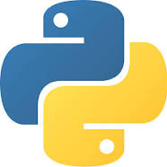

Python is a high-level, general-purpose programming language.
Its design philosophy emphasizes code readability with the use of significant indentation.
Its language constructs and object-oriented approach aim to help programmers write clear, logical code for small- and large-scale projects.
Developer: Python Software Foundation
First appeared: 20Paradigm: Multi-paradigm: object-oriented, procedural (imperative), functional, structured, reflective